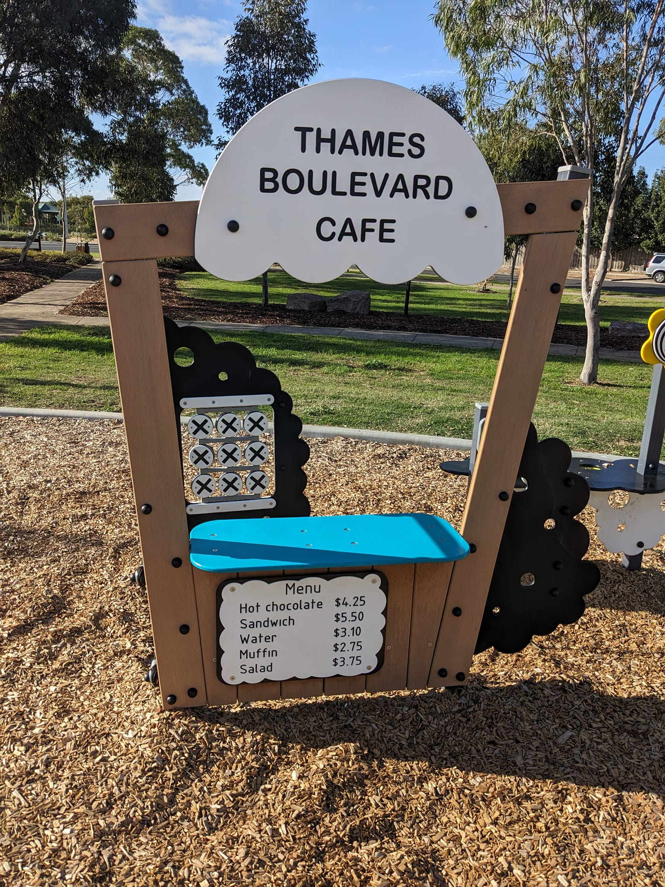

Craft & Caffeine
Weekly drop in craft at Cafe QB.
Community making in Werribee
A weekly place to make things and meet people at Cafe QB.

Weekly drop in
Program dates change each term. Check Facebook for the latest notices before your visit.
Weekly drop in craft at Cafe QB.
All ability social craft for adults.
Creative activity and connection.
Messy play for little makers.
A themed make with food and company.
A social lunch around the community table.

Creating Villages
Cafe QB is supported by volunteers and provides cafe skills training for people with disability. Community groups use the space to connect and create.
Read the official listing